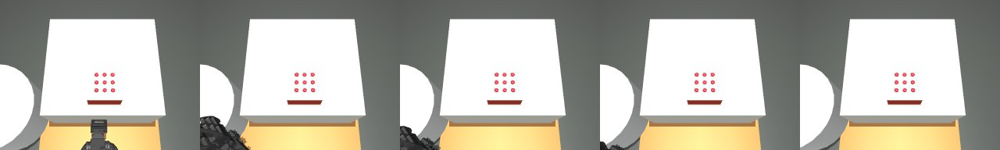
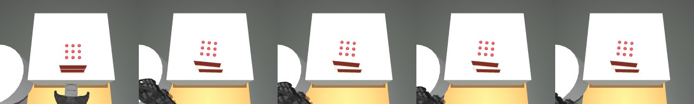
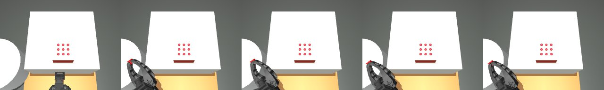
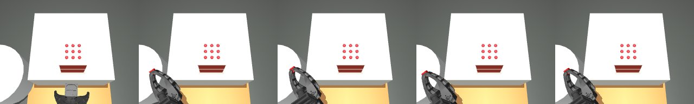

재학습 모델의 MuJoCo 실행·비교 분석
전체 학습 보고서로 이동
박스 외형·카메라 수정 전후 인식 정합·정책 반응·물리 비교
MuJoCo를 실제로 무엇까지 실행했는가
학습 완료와 MuJoCo 검증 완료는 별개입니다. 현재 새 비교 상태: completed.
새 정책·정지 대조군 실행 72/72회, 새 시연 재생 6/6회입니다.
보정되지 않은 환경에서의 탐색적 비교이며, 실제 로봇의 성공률로 해석하지 않습니다.
회차 0·시드 17의 CNN/경량 ACT 각 3개 데이터 방식, 공식 ACT 2개 데이터 방식, 전체 데이터 최종 모델 2개를 고정해 비교합니다.
공통 재예측 간격은 5스텝입니다. 공식 최종 ACT의 기본 100스텝 간격과 현재 관절 유지 대조군도 별도 실행합니다.
박스 2개·1개 각각 기준 장면 1개와 동일한 위치 이동 시드 17·42, 각 50초·30Hz입니다. 1개 조건은 시작 관절도 달라 개수만의 효과는 아닙니다.
조건·모델을 시뮬레이션 성적에 맞춰 선택하지 않았습니다. 같은 환경 시드의 비교이며 물리 실측 검증은 남아 있습니다.
이번 실행에서 확인한 것
학습 모델 실행 66회 중 안정 배치 도달은 0회입니다.
25mm 이상 상승했지만 손가락 접촉이 없는 실행도 1회입니다. 높이 상승만으로 잡기 성공이라고 판단하지 않습니다.
실제 기록 명령 재생은 6회 중 배치 성공 0회입니다.
녹화 데이터에서의 예측 오차 개선이 이 시뮬레이션의 물체 배치 성공으로 이어졌는지를 별도로 확인했습니다.
모든 모델이 같은 배치 실패를 보이면 이 지표만으로 우열을 정할 수 없습니다. 손가락 접촉·명령 추종·목표 제한 개입은 실패 과정을 비교하는 진단 지표입니다.
보충 데이터 효과와 환경의 외관·접촉 불일치를 분리하려면 성공 시연 재생과 카메라·접촉 보정을 먼저 통과해야 합니다.
모델·제어 방식별 차이
전체 데이터 최종 CNN에서는 목표 제한이 평균 64.9%의 프레임에 개입했습니다.
원래 예측 목표가 현재 관절에서 멀어 환경의 10단위 제한이 동작을 크게 바꾼 경우가 많았습니다. 예측 명령과 실제 관절 추종 오차를 함께 확인해야 합니다.
공식 최종 모델은 재예측 간격 5/100스텝에서 평균 명령 추종 MAE가 1.200/1.016였습니다. 간격에 따라 궤적이 달라졌지만 배치 성공을 확인한 것은 아닙니다.
새 비교는 고정 회차·시드의 모델 일부와 전체 데이터 최종 후보를 평가한 것입니다.
48개 경량·8개 공식 학습 체크포인트 전부를 시뮬레이션에 넣었다는 뜻은 아닙니다. 녹화 MAE가 작은 모델도 시뮬레이션 영상·상태를 받으면 다른 궤적을 만들 수 있으며,
현재 기록만으로 시각 외관 차이·관측 분포 변화·동역학 불일치 중 한 원인으로 확정하지 않습니다.
접촉 프레임은 손가락 link6·link7과 박스 사이 실제 접촉만 집계합니다. 바닥 접촉을 잡기 성공으로 세지 않습니다.
목표 제한 개입은 예측 명령이 현재 관절 대비 10 단위를 넘어 환경에서 제한된 프레임 비율입니다.
명령 추종 MAE는 원래 예측 목표와 시뮬레이터 관절의 차이이므로 목표 제한·동역학 오차도 포함합니다. 안정 배치는 들림·놓기·수신대 지지·저속 유지 15프레임을 모두 만족한 경우입니다.
같은 장면의 실제 시연 명령 재생 대조
전체 데이터 최종 모델의 실제 영상
lightweight_final_all15 · 박스 1개

lightweight_final_all15 · 박스 2개

native_act_final_all15 · 박스 1개

native_act_final_all15 · 박스 2개

시연 재생이 실패하면 모델 실패와 환경 불일치를 분리할 수 없습니다. 영상 렌더링·카메라·접촉·모터 보정을 다음 검증 과제로 남깁니다.